Dentro do Teleport de Eventos
Na Safezone, siga para sudoeste e entre no Teleport de Eventos. O Dark Totem fica dentro dessa área.
Ele aparece às 20:00, de segunda a domingo, sempre no mesmo local.
Duas formas de receber um prêmio extra
Top damage
Um ganhador: o jogador que causar mais dano recebe um dos itens da coluna Top damage.
Participante sorteado
O segundo prêmio é sorteado entre quem causou dano no boss e está dentro do alcance de 10 tiles no eixo X e 10 no eixo Y. O top damage fica fora desse sorteio.
Como concorrer: ataque o Dark Totem e permaneça próximo dele para participar da seleção. Estar no local sem causar dano não atende ao critério informado. Participar não garante vencer o sorteio.
As porcentagens abaixo indicam a chance de cada item depois que o ganhador da categoria é definido. Cada categoria entrega um resultado, na quantidade indicada.
Prêmios do top damage e do sorteio
| Recompensa | Quantidade | Top damage | Participante sorteado |
|---|---|---|---|
| 1 | 6% | 15% | |
| 3 | 7% | 14% | |
| 1 | 8% | 13% | |
| 1 | 9% | 12% | |
| 1 | 9% | 11% | |
| 5 | 10% | 10% | |
| 1 | 11% | 8% | |
| 1 | 10% | 6% | |
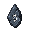 Reset Boss Stone | 1 | 9% | 4% |
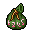 Primal Bag | 1 | 8% | 3% |
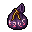 Soulwar Bag (Bag You Desire) | 1 | 7% | 3% |
| 1 | 6% | 1% |
Estas são as recompensas extras do evento. Elas têm uma seleção própria e não devem ser somadas às chances de loot do boss.
Itens que o boss pode entregar
Lista completa das entradas de loot, organizada nas categorias do arquivo do boss. Os percentuais são as chances base configuradas, antes de multiplicadores e ajustes do sistema de recompensas.
Leitura das chances: 95.000 corresponde a 95%; 250 corresponde a 0,25%; 1 corresponde a 0,001%. Essas entradas não formam uma tabela de prêmio único e suas chances não precisam somar 100%. Crystal Coin aparece duas vezes no arquivo, com 15–100 unidades e 95% em cada entrada.
Comum
| Item | ID | Quantidade | Chance base |
|---|---|---|---|
| Crystal coin | 3043 | 15–100 | 95% |
| Crystal coin | 3043 | 15–100 | 95% |
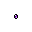 Small amethyst | 3033 | 50–100 | 90% |
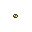 Small topaz | 9057 | 50–100 | 90% |
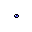 Small sapphire | 3029 | 50–100 | 82% |
| White pearl | 3026 | 50–100 | 82% |
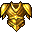 Golden armor | 3360 | 1 | 82% |
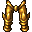 Golden legs | 3364 | 1 | 82% |
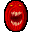 Demon shield | 3420 | 1 | 82% |
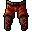 Magma legs | 821 | 1 | 82% |
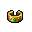 Emerald bangle | 3010 | 25–30 | 82% |
| Glacier kilt | 823 | 1 | 82% |
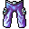 Lightning legs | 822 | 1 | 82% |
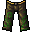 Terra legs | 812 | 1 | 82% |
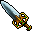 Emerald sword | 8102 | 1 | 50% |
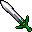 Havoc blade | 7405 | 1 | 50% |
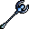 Shadow sceptre | 7451 | 1 | 82% |
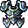 Magic plate armor | 3366 | 1 | 82% |
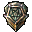 Mastermind shield | 3414 | 1 | 82% |
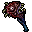 Chaos mace | 7427 | 1 | 82% |
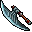 Demonwing axe | 8098 | 1 | 50% |
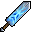 Haunted blade | 7407 | 1 | 10% |
| Phoenix shield | 3439 | 1 | 40% |
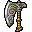 Ornamented axe | 7411 | 1 | 40% |
| Flames of the Percht Queen | 30278 | 3–5 | 50% |
| Crown of the percht queen | 30275 | 1 | 50% |
| Crown of the percht queen | 30276 | 1 | 50% |
Raro
| Item | ID | Quantidade | Chance base |
|---|---|---|---|
| 36827 | 1 | 2% | |
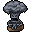 Crunor Idol | 30055 | 1–5 | 9% |
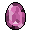 Giant Amethyst | 32622 | 1–5 | 9% |
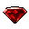 Giant Ruby | 30059 | 1–5 | 9% |
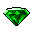 Giant Emerald | 30060 | 1–5 | 9% |
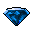 Giant Sapphire | 30061 | 1–5 | 9% |
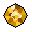 Giant Topaz | 32623 | 1–5 | 9% |
| 63111 | 1–25 | 9% | |
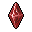 Imbuing crystal | 63621 | 1–2 | 20% |
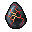 Fiery Tear | 39040 | 1 | 4% |
| Ceremonial Mask | 3395 | 1 | 8% |
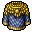 Native Armor | 3402 | 1 | 8% |
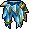 Icy Culottes | 19366 | 1 | 8% |
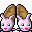 Bunnyslippers | 3553 | 1 | 8% |
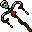 Wand of Dimensions | 12603 | 1 | 8% |
| 19082 | 1–2 | 2% | |
| 63068 | 1 | 1,2% |
Muito raro
| Item | ID | Quantidade | Chance base |
|---|---|---|---|
| 63614 | 1 | 5% | |
| 63105 | 1 | 2% | |
| 63106 | 1 | 2% | |
| 63107 | 1 | 2% | |
| 63108 | 1 | 2% | |
| 63109 | 1 | 2% | |
| 63284 | 1 | 1,2% | |
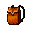 Changing Backpack | 37536 | 1 | 1% |
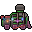 Wind-Up Loco | 37398 | 1 | 1% |
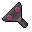 Wind-Up Key | 37397 | 1 | 1% |
| 63293 | 1 | 0,6% | |
| Primal Bag | 39546 | 1 | 0,25% |
| Soulwar Bag (Bag You Desire) | 34109 | 1 | 0,25% |
| 63309 | 1 | 0,15% | |
| 63310 | 1 | 0,15% | |
| 63311 | 1 | 0,15% | |
| 63312 | 1 | 0,15% | |
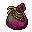 Bag you covet | 43895 | 1 | 0,01% |
| 5903 | 1 | 0,001% |
Bag You Covet e Ferumbras’ Hat têm a marcação especial unique no arquivo. O comportamento dessa marcação e os ajustes de loot dependem do sistema do servidor.